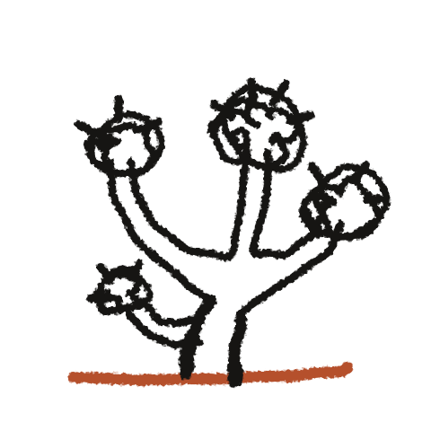
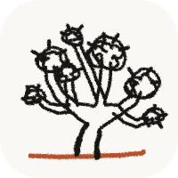
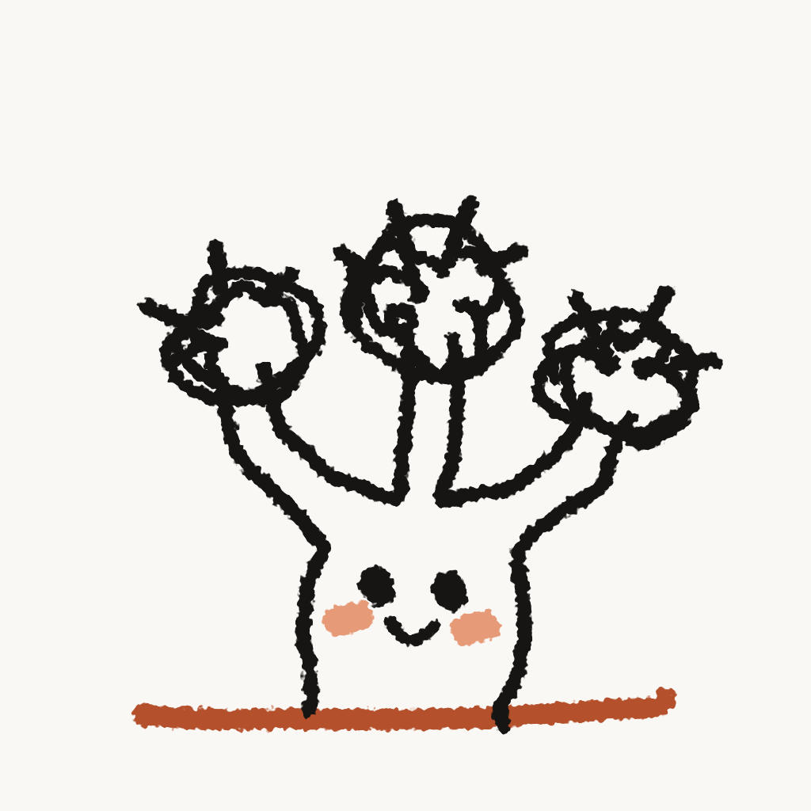
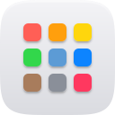
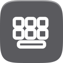
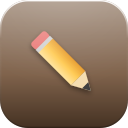
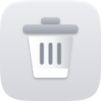
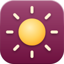

Joshua Tree
A computer you can read end to end. This page is the brand in one place: the mark, the friend, the colours, the type and the pieces of the desktop.
The mark
One Joshua tree drawn in crayon. Steady ink lines, a trunk that swells where the marker pressed, three arms ending in looping tufts with paper showing through, and one terracotta stroke for the ground. The ground is the mark's only colour.

On paper. The default.
On ink. Line turns paper, the ground stays terracotta.
app iconThe mascot

The mark drawn as a kid would draw a friend. The same crayon hand on a chubbier tree with a belly, shorter arms, two dot eyes, a small smile and terracotta-pink cheeks.
- Shows up where the OS wants a face: the splash, the login, empty screens.
- Never on a working screen.
- No hands, no hair, no grin.
Colour
Paper, ink and one terracotta. The accent is used sparingly: the mark's ground, focus rings, links. Never purple, never teal, never a gradient that changes hue.
- #b5502cTerracottaThe one accent. Ground stroke of the mark, focus rings, links.
- #e08a5fTerracotta, on darkThe same accent on a dark page.
- #faf8f4PaperPage ground in light.
- #161513InkText and the mark's line.
- #5c584fInk softSecondary text on paper.
- #b3ada0Ink soft, on darkSecondary text on ink.
- #ded9cdHairlineRules and card edges in light.
On the desktop
- #f5f0ebWindow bodyWINDOW_BODY
- #1c1c1eWindow inkWINDOW_INK
- #d9d3cbWindow ruleWINDOW_RULE
- #efebe4Dock trayDOCK_TRAY_COLOR
- #d6d0c6Tray edgeTRAY_EDGE
- #bdb8b0Menu bar ruleMENUBAR_RULE
- #f4f1ecDock labelDOCK_LABEL_BG
- #ff5f57Close dotCLOSE_DOT
- #e5e5e7Splash greythe Pi boot splash
- #6e6e6eWallpapergraphite, one flat colour since 3.9.0
- #201009Night floorNIGHT_FLOOR, where the wallpaper goes at night
- #ddddddDay tintDAY_TINT
Type
Tree Sans, our own face built from Inter. Text cut below 22 px, Display cut from 22 px up. Nine sizes on a 4 px grid, and weights with jobs: 400 reads, 500 labels, 600 leads, 700 headlines. Sans-serif only.
11 / 16 pxJoshua Tree boots into its own desktop.
13 / 20 pxJoshua Tree boots into its own desktop.
15 / 20 pxJoshua Tree boots into its own desktop.
17 / 24 pxJoshua Tree boots into its own desktop.
22 / 32 pxJoshua Tree boots into its own desktop.
28 / 40 pxJoshua Tree boots into its own desktop.
36 / 48 pxJoshua Tree boots into its own desktop.
48 / 64 pxJoshua Tree boots into its own desktop.
64 / 84 pxJoshua Tree boots into its own desktop.
Space
- 4
- 8
- 12
- 16
- 24
- 32
- 48
- 64
- 96
Icons
One picture, one tile
A superellipse tile (n = 4.8) with a soft edge, a bold glyph in the middle, clear of the top 16 and bottom 20 units.
One light, from the top
The tile darkens top to bottom and carries a white lip along its top edge. Gradients only carry that light and never change hue.
No words
No text, letters or wordmarks on any icon. No emblem, no speech bubble, no purple or teal.





Window and dock
One frame for every window: an 18 px corner, a hairline under the title, the name centred in ink, a red close dot on the left. The dock is a warm cream tray with a soft shadow. Behind them the wallpaper is one flat graphite grey.
Groceries
Bread, eggs, coffee, a new SD card for the Pi.
What it never does
- Shows a pixel. Text, icons and wallpaper are anti-aliased at 2x.
- Draws an emoji.
- Uses purple or teal in an icon or the window chrome.
- Puts a border, stripe or card edge on something just to decorate it.
- Animates windows open, closed or into a snap.
- Turns the wallpaper black and white, or night toward black or blue.
- Uses serif or monospace outside a shell grid.
- Adds a second accent colour.
Mark history
The mark grows one small step at a time and never gets redesigned from scratch. From 4.0 on it is refreshed with every major release.
- 1.3The engraved badge traced to clean lines; window buttons, a power-symbol sun and a prompt added.
- 1.4New mark: the engraved tree on its own, a ground line, one ink colour.
- 2.0The engraved look reaches the favicon, the boot splash and the landing seal.
- 2.12The same tree finished more carefully: rounded joints, alternating blades, crowns that stay separate at 32 px.
- 2.25A new, much simpler mark: one tree scribbled in crayon like a hand-drawn album cover.
- 3.0The crayon tree tightened: steadier lines, denser tufts, and the ground in terracotta, its first colour.
- 4.0One more crayon stroke at the foot of the trunk. From here the mark is touched with every major release.